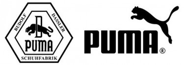
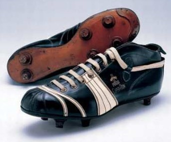
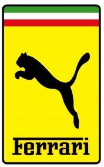

Історія бренду PUMA
Історія Пума (анг.PUMA) починається разом з історією Адідас, оскільки у засновника Пуми є брат, який заснував Адідас, а спочатку вони разом з батьком заснували фірму "Дасслер".

Як все починалося:
Навесні 1948 року брати дуже сильно посварилися, а тому вирішили розділити сімейну справу на дві частини. Так Адольф назвав свою компанію Adidas, а Рудольф вибрав в якості назви - PUMA. Тепер брати закляті конкуренти – протиборство між компаніями проявляється і в наші дні.
1960 рік – з'явився знаменитий логотип, що зображає пуму під час стрибка.
В одному з перших після Другої Світової війни футбольних матчів кілька гравців національної команди Німеччини віддали перевагу саме бутсам Рудольфа Дасслера, виступаючи в них на змаганнях. Першу яскраву перемогу новій фірмі приніс 1952 рік, коли Джозеф Бартел (Люксембург) в кросівках Puma завоював Олімпійське золото в бігу на 1500 метрів. Через два роки на чемпіонаті в Йокогамі німець Хайнц Фюттерер встановив світовий рекорд на дистанції 100 метрів, а в 1960 році Армін Хері завоював на такій же дистанції золоту медаль. Спортсмени виступали у взутті Puma.

У 1968 році «портфель перемог» Puma поповнився ще чотирма золотими медалями, завойованими спортсмени на Олімпійських Іграх у Мексиці. В цей час компанія почала випуск спортивного взуття на застібках-липучках, ставши піонером у цій сфері. В 1970 році на Чемпіонаті світу з футболу, що проходив у Мексиці, кращим гравцем був визнаний легендарний Пеле. Йому вдалося вивести свою команду в лідери Чемпіонату, обігравши збірну Італії. Пеле виступав у бутсах Puma.
Після десятиліття в першому своєму Чемпіонаті Світу Дієго Марадона бере участь в бутсах від PUMA. І в 1986 році збірна Аргентини на чолі з Дієго перемагає, отримавши титул Чемпіонів Світу. А Марадона удостоюється нагороди «Кращий гравець Чемпіонату».

У 1990 році на ринку з'явилася дитяче взуття Puma, яке було створене із застосуванням технології Inspector, що дозволяє контролювати відповідність розміру взуття стопі дитини. У 1996 році закінчилося тестування нової технології Cell (перша в світі технологія для виготовлення підошви спортивного взуття). Ця розробка стала справжньою революцією у світі спорту. Трохи пізніше у співпраці з компанією Pittards був розроблений новий вид шкіри (Pittards Soccer 2000). Цей матеріал використовували тільки для виробництва взуття серії Puma King, оскільки він володів унікальними водостійкими властивостями.
У 2004 році PUMA оголошує про підписання багаторічного контракту з Ferrari, який набрав чинності 1 січня 2005 року. PUMA AG стає офіційним постачальником Scuderia Ferrari Marlboro, найуспішнішої команди Formula 1 всіх часів. У зв'язку з цим, на додачу до вогнетривких товарів, PUMA випускає командну екіпіровку, взуття та аксесуари. PUMA стає офіційним постачальником взуття Міхаеля Шумахера.
За багаторічну історію компанії її представляли такі знаменитості, як Пеле, Дієго Марадонна, Хайке Дрекслер, Мартіна Навратілова, Гільєрмо Віласом, Серена Вільямс, Борис Беккер, Оскар Де Ла Хойя, Маркус Ален, Ральф Семпсон, Уолтер Фрейзер, Вінс Картер та ін.